Zdjęcia operacji neurochirurgicznych

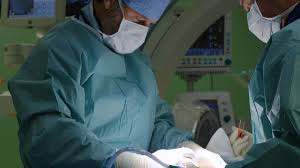
Neurochirurgia jest jedną z najbardziej skomplikowanych i precyzyjnych dziedzin medycyny. Zajmuje się diagnozowaniem i leczeniem chorób układu nerwowego, w tym mózgu, rdzenia kręgowego oraz nerwów obwodowych. Operacje neurochirurgiczne wymagają najwyższej precyzyjności oraz zaawansowanego sprzętu, ponieważ nawet najmniejszy błąd może mieć poważne konsekwencje dla pacjenta. Neurochirurdzy często współpracują z neurologami, onkologami oraz specjalistami z innych dziedzin, aby zapewnić pacjentom kompleksową opiekę.
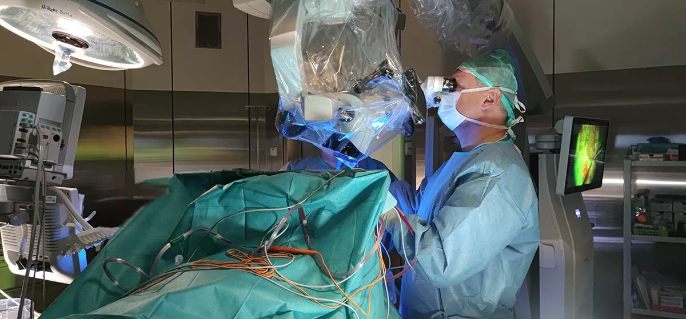
Mikroskop neurochirurgiczny - Używany do powiększania widoku obszaru operacyjnego w celu precyzyjnego usunięcia guzów mózgu lub innych zmian w układzie nerwowym.
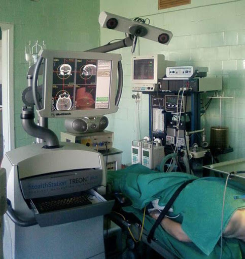
System nawigacji neurochirurgicznej - Wykorzystuje obrazowanie 3D do precyzyjnego prowadzenia narzędzi chirurgicznych podczas operacji.
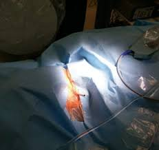
Endoskop neurochirurgiczny - Używany w minimalnie inwazyjnych procedurach do monitorowania wnętrza ciała pacjenta i przeprowadzania operacji z minimalnymi nacięciami.
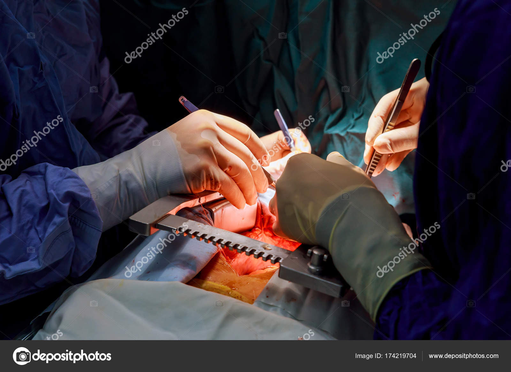
Skalpel chirurgiczny - Podstawowe narzędzie do cięcia tkanek podczas operacji neurochirurgicznych.
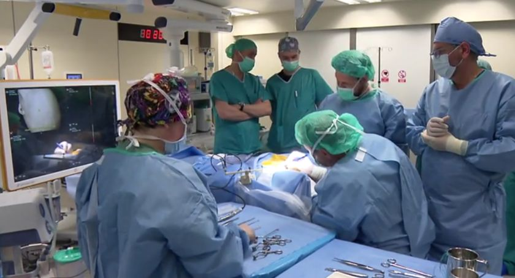
Laser neurochirurgiczny - Używany do precyzyjnego usuwania guzów lub tkanek w sposób mniej traumatyczny dla pacjenta.
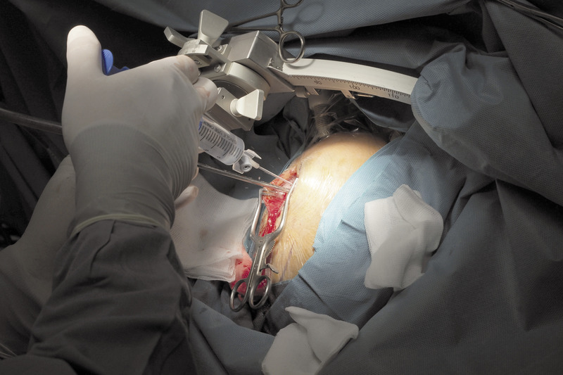
Elektroda do stymulacji mózgu - Stosowana w leczeniu chorób neurodegeneracyjnych, takich jak Parkinson, do stymulacji określonych obszarów mózgu.
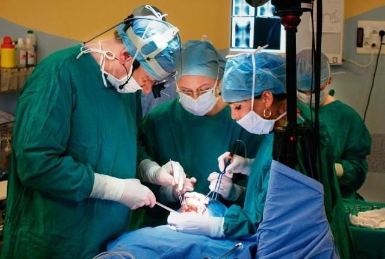
Kranitom - Narzędzie używane do wycinania części czaszki podczas operacji neurochirurgicznych, takich jak usuwanie guzów mózgu.
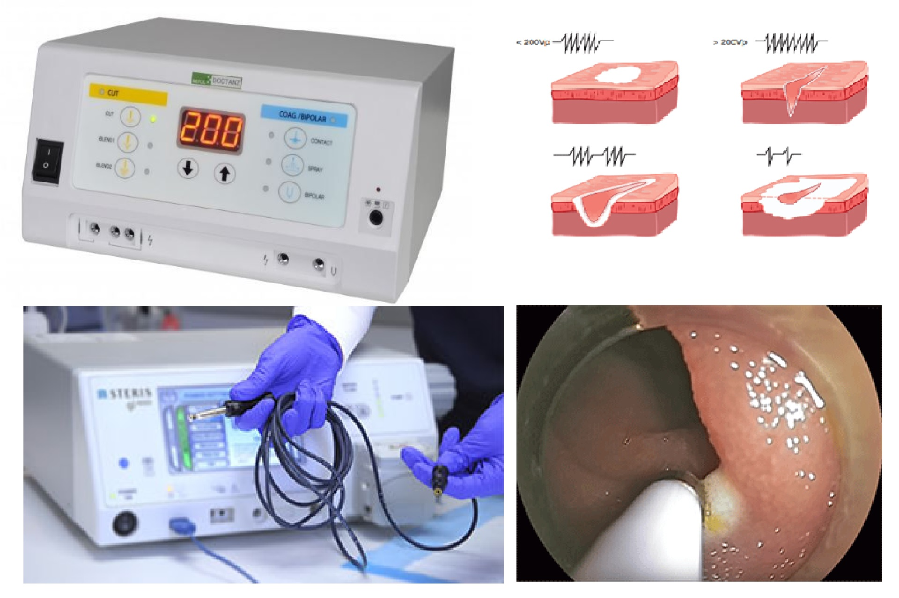
Koagulacja elektrokoagulacyjna - Narzędzie wykorzystywane do zatrzymywania krwawienia podczas operacji poprzez zastosowanie wysokiej temperatury.
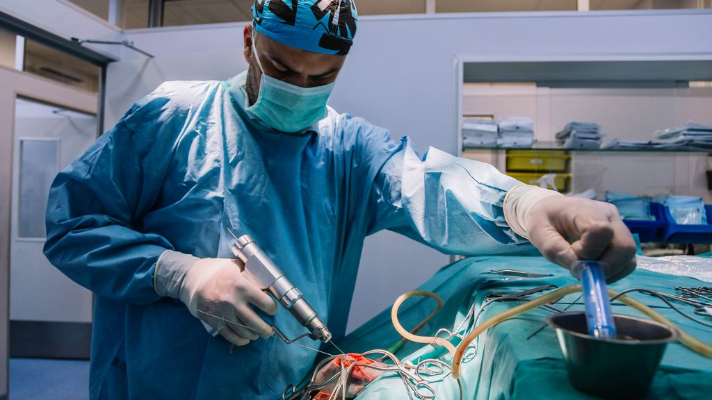
Wiertło neurochirurgiczne - Używane do wykonywania precyzyjnych otworów w czaszce w celu dostępu do mózgu.
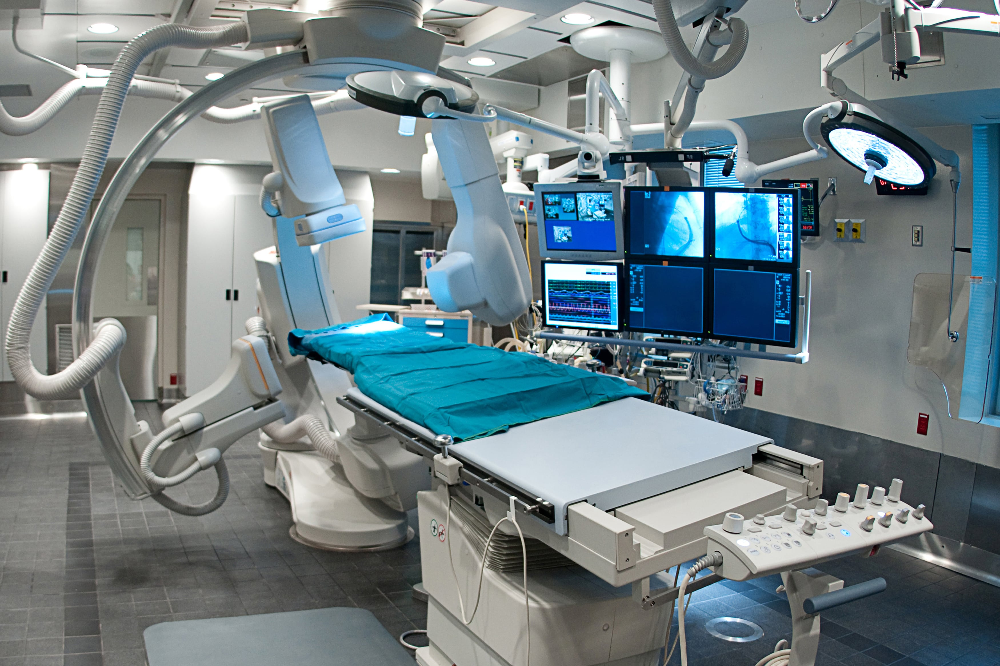
Stół operacyjny - Specjalistyczny stół, który umożliwia chirurgowi dostosowanie pozycji pacjenta w trakcie operacji neurochirurgicznych.
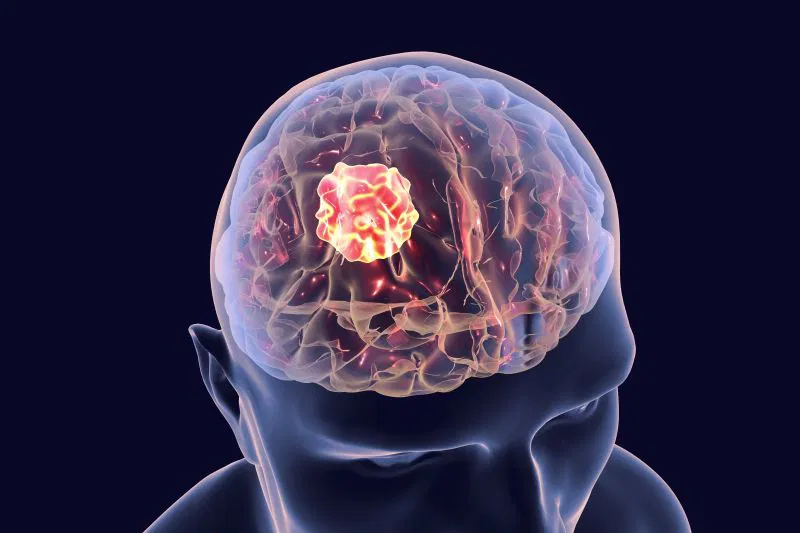
Guz mózgu - Nowotwory rozwijające się w mózgu, mogą być łagodne lub złośliwe. Neurochirurdzy często wykonują operacje w celu ich usunięcia lub zredukowania rozmiaru.

Tętniak mózgu - Nieprawidłowe poszerzenie naczynia krwionośnego w mózgu, grożące pęknięciem. Neurochirurgia może pomóc w naprawie lub usunięciu tętniaka.
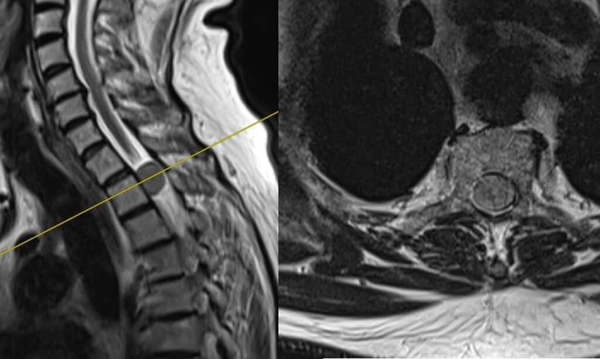
Guz rdzenia kręgowego - Nowotwór wpływający na rdzeń kręgowy, który może prowadzić do osłabienia lub paraliżu. Usunięcie guza jest często konieczne.
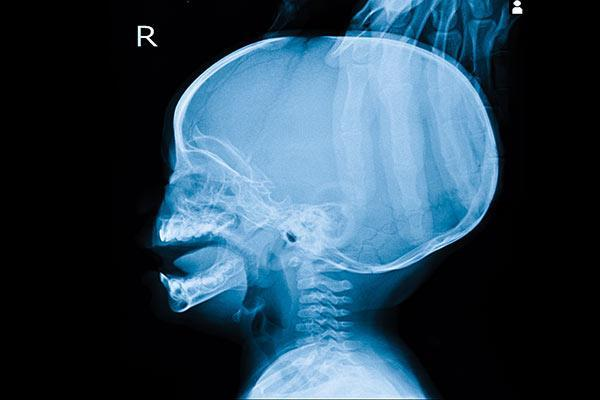
Wodogłowie - Nagromadzenie płynu mózgowo-rdzeniowego w komorach mózgu, co prowadzi do powiększenia czaszki i może powodować uszkodzenia mózgu. Wodogłowie jest często leczone chirurgicznie za pomocą shuntów.
Padaczka/epilepsja - Choroba neurologiczna powodująca niekontrolowane napady. W niektórych przypadkach neurochirurgia może pomóc w leczeniu padaczki poprzez usunięcie ogniska napadowego.
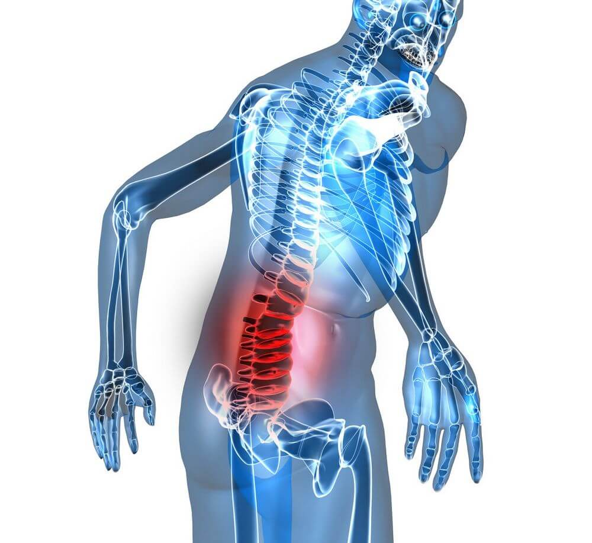
Uraz rdzenia kręgowego - Uszkodzenie rdzenia kręgowego, które może prowadzić do paraliżu. Neurochirurgia może pomóc w naprawie uszkodzeń rdzenia i poprawie jakości życia pacjenta.
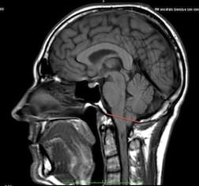
Malformacja Chiari - Wrodzona deformacja struktury mózgu, w której migdałki móżdżku przesuwają się w dół do kanału kręgowego. Chirurgiczne leczenie może obejmować odbarczenie rdzenia kręgowego.
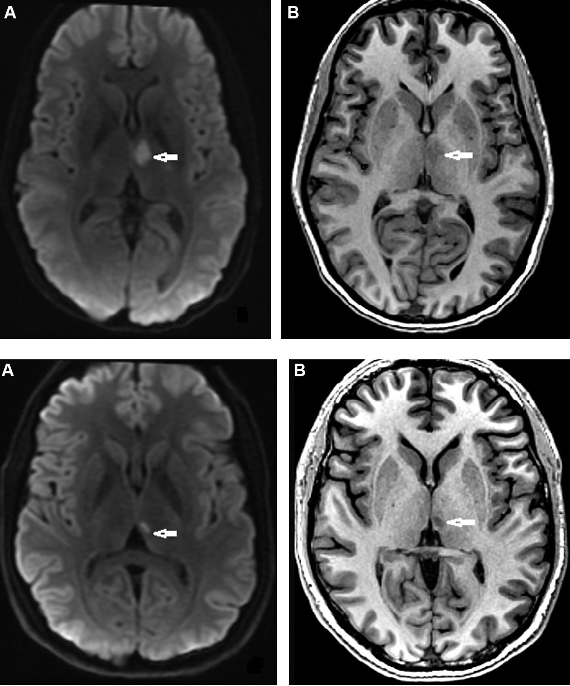
Porażenie mózgowe - Zaburzenie neurologiczne wynikające z uszkodzenia mózgu w okresie niemowlęcym lub dziecięcym. Chirurgia może pomóc w leczeniu spastyczności i innych objawów.